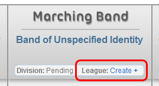

Leagues allow players to create a community within FMA's existing structure. These groups allow players to enter competitions hosted by their league, form leadership roles, and form a bond with other players. Being in a league is NOT required to perform well in an FMA circuit, however, it can be fun to join a player created community!
League Features
- Leadership roles: Founder, Board of Directors
- Invite system
- League hosted events, members can instantly join
- View recent league activity
- League profile with information and announcements
Joining a League
If you are a new player, you might want to spend some time in the forums, particularly League Discussion, in order to find out what leagues you might be interested in. You can find a list of leagues in the League Directory. If you are interested in a specific league, you can send a personal message to the Founder or a Board Member, or find a league thread on the forums.
Creating a League

The adventurous player can choose to create his or her own league. To do this, your group must not already be in a league, be at least level 10, and have $1,000 to spend. You will spend the $1,000 once you create the league.
Simply click the Create link on your Director Overview page as shown in the picture. You will fill out some information about your new league and then be taken to your new league profile. From here, you can spend your starting money to create league events (see more details about this on the following pages), promote members to your Board of Directors, and view league activity. You can also set an announcement. Also, as a founder, you can add events created by your members to your league schedule.
You can invite groups to your league by visiting their profile page and clicking the appropriate link in the top right corner. They can either accept or dismiss your invitation. Keep track of who joins the league by viewing your league profile's Recent Activity.